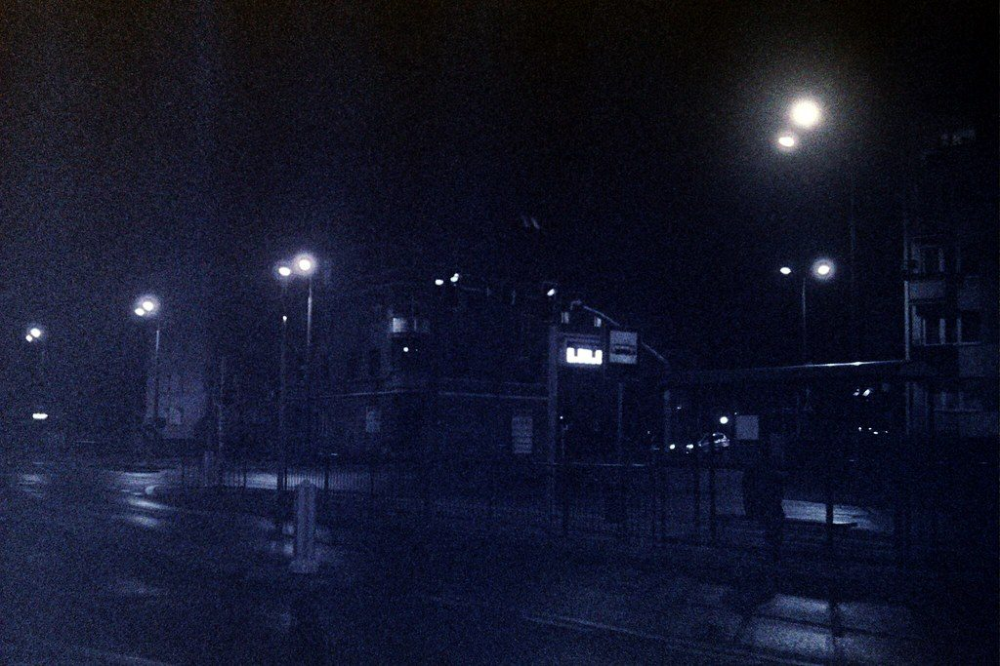
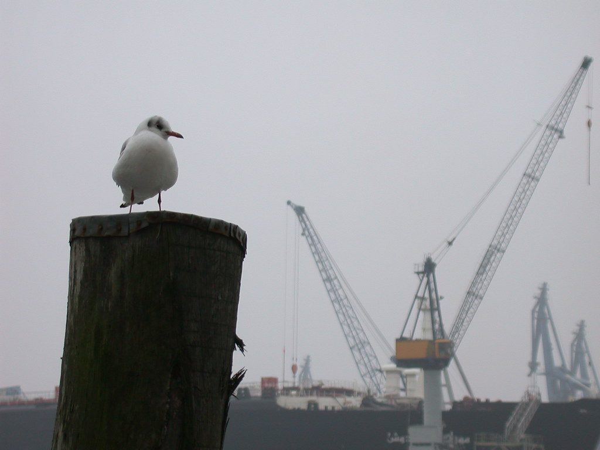
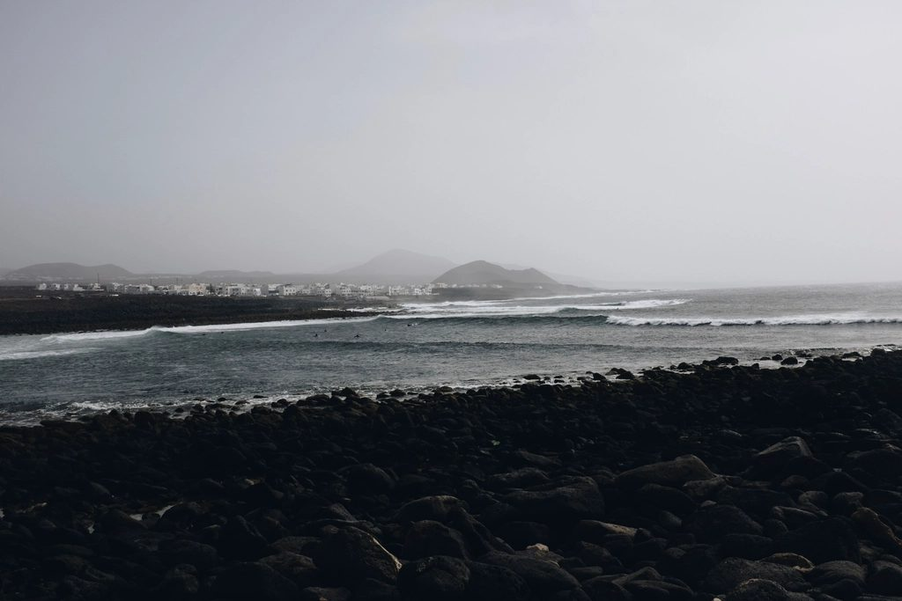
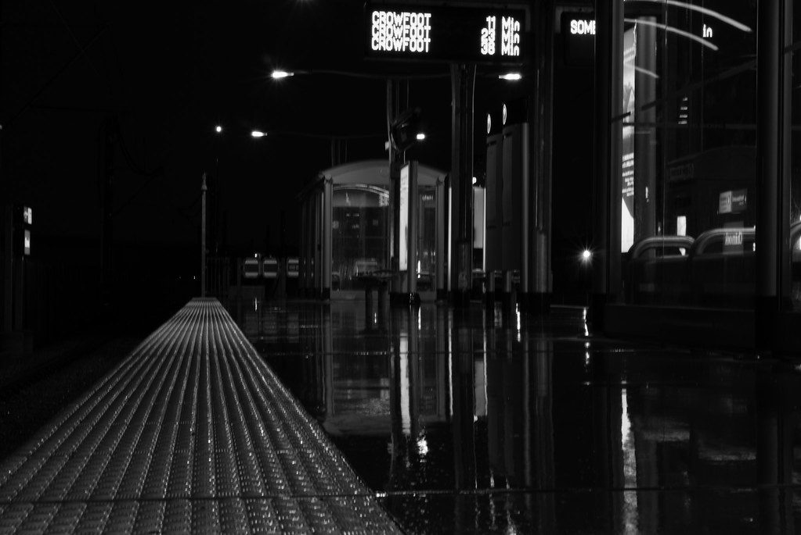
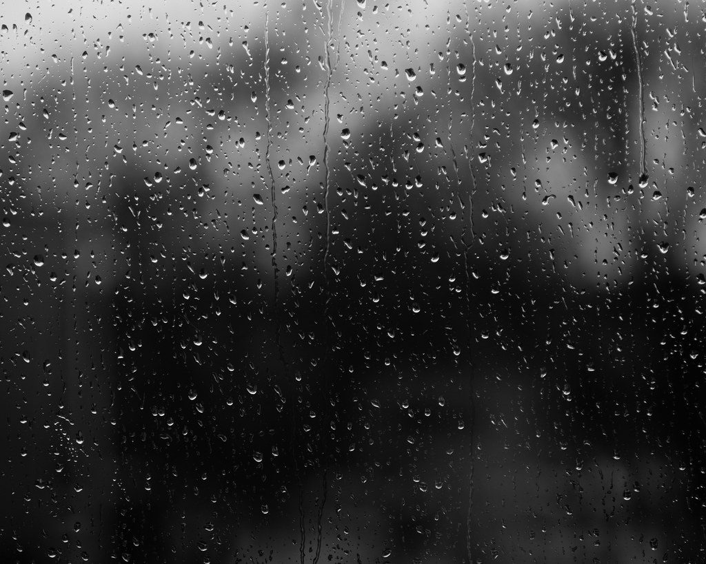
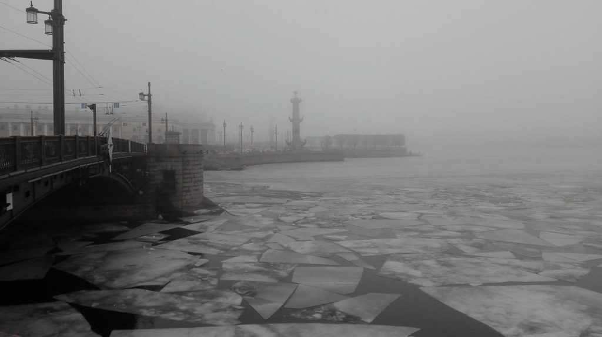
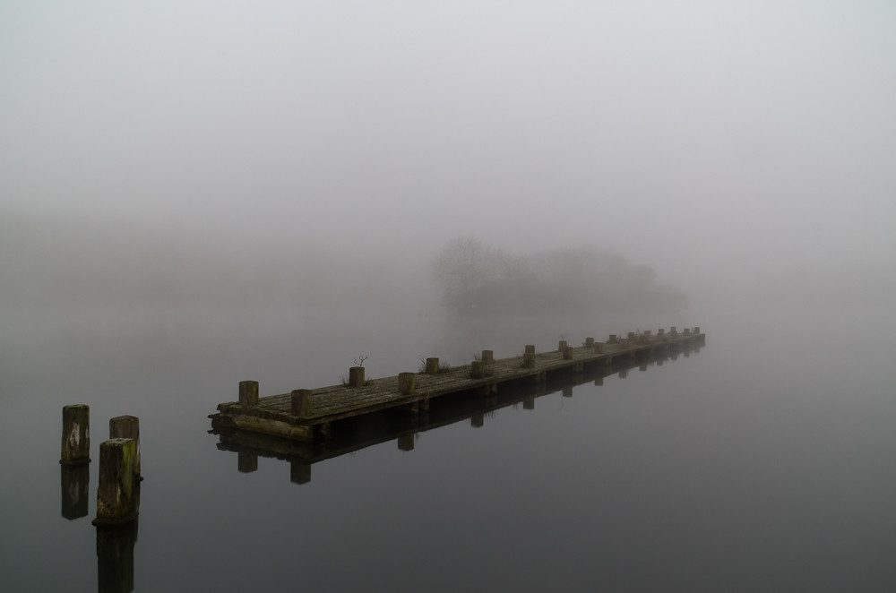
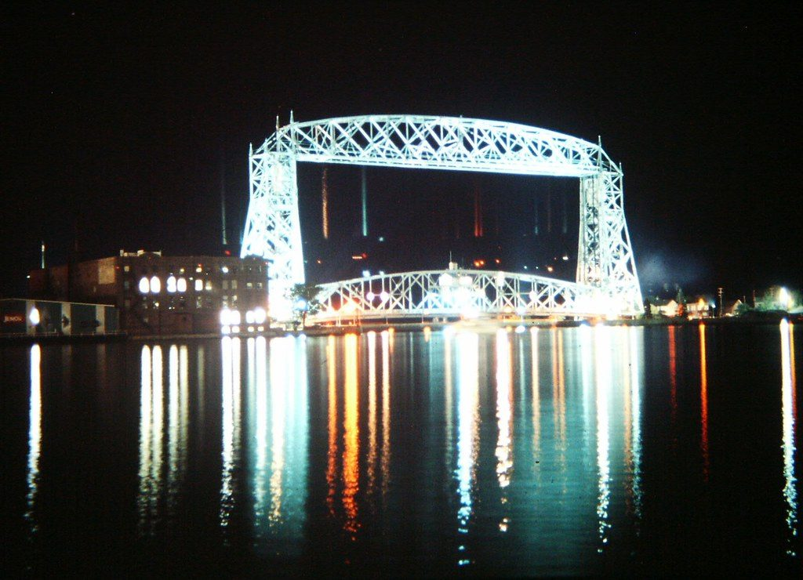

Bildquellen
Alle Fotos auf dieser Seite sind gemeinfrei: CC0 1.0 (Public Domain Dedication) oder als Public Domain markiert (PDM). Gefunden über Openverse, unverändert übernommen. Eine Nennung ist bei CC0 nicht vorgeschrieben, wir nennen die Urheber trotzdem.
Wetterdaten: Open-Meteo.com, Lizenz CC BY 4.0.
| Bild | Titel | Urheber | Lizenz | Quelle | Variante |
|---|---|---|---|---|---|
 | Night Trip 2018-11-18 | Other dreams | CC0 | Originalquelle | B |
 | Ohne Titel | ani! | CC0 | Originalquelle | B |
 | Foggy, misty sea, black pebbles | unbekannt | CC0 | Originalquelle | B |
 | Rainy Platform | dr-scott | CC0 | Originalquelle | B |
 | Rainy November | Thomas Backa | CC0 | Originalquelle | B |
 | Foggy morning | skochkarev | PDM | Originalquelle | B |
 | Ümminger See im Nebel | mkniebes | CC0 | Originalquelle | B |
 | Duluth Aerial Lift Bridge at Night | Gary Lee Todd, Ph.D. | CC0 | Originalquelle | B |
Studienprojekt der Kunstschule Wandsbek, keine offizielle Seite.